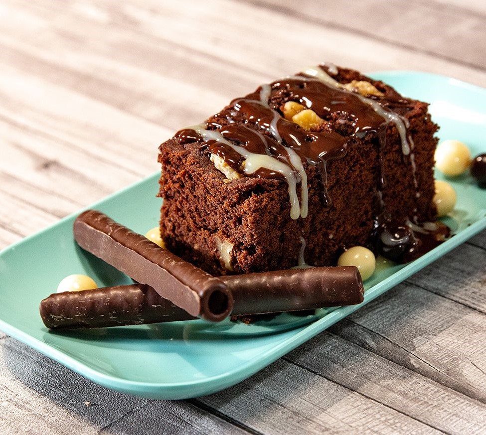

Brownie

Ingredientes
- 200 gramos de chocolate negro
- 110 gramos de mantequilla
- 4 huevos
- 120 gramos de azúcar
- 1 cucharada de esencia de vainilla
- 85 gramos de harinaç
- bicarbonato
- Nueces
- Pepitas de chocolate
Cómo hacer Brownies:
- En un bol ponemos el chocolate y la mantequilla. Lo metemos al microondas a temperatura media para que se vaya derritiendo. Una vez derretido lo lo mezclamos muy bien.
- Ponemos los 4 huevos y el azúcar en un bol.
- Agregamos la harina y la cucharadita de bicarbonato. Mezclamos muy bien.
- Agregamos el chocolate que hemos derretido junto con la mantequilla y el toque de vainilla. Seguimos mezclando.
- Agregamos las nueces y las pepitas de chocolate.
- En un recipiente de horno ponemos un poco de mantequilla y harina para que no se nos pegue el brownie.
- Incorporamos la mezcla y cubrimos con unas pepitas y unas nueces (opcional). Introducimos al horno durante 30-35 minutos a 180º.